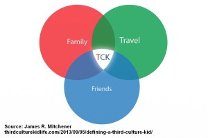

Articles >> December 2013
The TCK and Cross Culture Community 2013 Year in Review
[The first year in review for the TCK and Cross Cultural Community]
Since the coining of the term "third culture kids" (TCK's), credited to Dr. Ruth Hill Useem "in the 1950s while a member of the Sociology Department at (Michigan State University)," there have been many more developments in the study of, insights on, discussions on, and resources for TCK's. Throughout the decades, TCK's have created a distinct voice as a community. What was once a marginalized field of study or population identity has slowly been emerging out of the shadows with continued pioneering work. Early pioneers include researcher Dr. Ann Baker Cottrell who worked with Dr. Ruth Useem and Families in Global Transitions co-founder Ruth Van Reken, who in addition to other publications, co-authored "Third Culture Kids: Growing Up Among Worlds" with the late co-author David C. Pollock. It was through Ruth and David's work that the definition of "third culture kid" began to have more consistency that the rest of the world began to widely use. The work of people like filmmaker Donna Musil and her film BRATS, which was featured on CNN, NPR and 178 countries worldwide on the Armed Forces Network Television have brought the TCK identity closer to mainstream attention.
With TCK's described as the "prototype citizens of the future" in 1984 by Ted Ward, then a sociologist at Michigan State University, it is worth noting not only how prominent TCK's such as US President Barack Obama, as referred to by Ruth Van Reken in a 2008 Daily Beast article, have impacted the world, but also how the field of TCK studies and the community of organizations and service providers that cater to the TCK or expat community have evolved. As such, significant milestones have occurred with the passing of each year.
TCKid reviews some significant milestones for the cross cultural, TCK, or expat community from 2013. Here are some of them:
TCK JT McInnis, while watching a film at a cinema, makes a connection between his teen years and the film he was watching, Argo, which won multiple awards. JT McInnis realizes there was a part of the story the world did not know and writes about his involvement with the hostage situation in Tehran 1979 in his blog. A central Texas television network journalist takes the opportunity to interview him in February.
(Please click here for the full KVUE interview)
Families in Global Transition (FIGT) introduces "IGNITE Sessions" in its annual conference program and in March of 2013, FIGT offers seven engaging IGNITE Sessions. With the concept, "enlighten us but make it quick," the six-minute-forty-second maximum sessions are designed to generate awareness and stimulate discussion. Check out the topics of the 2013 FIGT Conference IGNITE Sessions and be sure to register for the 2014 conference, The Global Family: Redefined!
Aga Alegria decides to expand on the stories shared in her short film, "Les Passagers" which led to the vision behind "Where is Home?, " a documentary examining the experiences of TCKs and their search for "home." Aga and her production team — Producer Paul Saltzman, an Emmy Award-winning film and television producer and director, and Production Assistant, Alethea Wang, also a TCK - start a successful campaign that ended in March 2013 to gain support for "Where is Home?" Their campaign was featured in a TCKid interview with TCKid Executive Assistant Erin Sinogba . The "Where is Home?" campaign and Aga's work was also referred to by the International New York Times in " Where is Home for a Third Culture Kid?"
With timeless value, here is her short film again:
Paula Vexlir , a psychologist who has been counseling since 2002, launches Expat Psi, an online psychology resource for Spanish speaking expats. Paula also embarks on the elaborate task of translating psychology and counseling resources and materials into Spanish, opening up more avenues for the TCK community, expat families and those who serve TCK's. Find out more about Paula's work, which she wrote about in France-based Expatriates Magazine, and be sure to go on their Facebook page for announcements, such as a Spanish blog for expats that Paula will start in 2014!
Elizabeth (Lisa) Liang opens the Stage Left Women at Work Festival in NYC on September 24 & 25 after a successful 5-week run in May at the Asylum Lab in Hollywood, CA with Alien Citizen: an earth odyssey, a funny and poignant one-woman show about growing up as a dual citizen of mixed heritage in Central America, North Africa, the Middle East, and New England. Lisa, a writer and award-winning bilingual actress who has worked in theatre, television, and film for more than 25 years, including a recurring role on " The West Wing," co-hosts the podcast "Hapa Happy Hour" and is published in Writing Out of Limbo.
Al Jazeera streams an episode on June 5 on "Cultural Chameleons," pushing TCKs further into mainstream consciousness. A TCKid Washington DC Group Leader, John Liang, a contributing author of anthology Writing Out of Limbo, shares a comment to the streaming episode (you may still access the page, but the video is no longer viewable in certain countries).
Pico Iyer, author of "Global Soul" and other books about global travel, tackles the question challenging for all global nomads, "Where is Home?" at Ted Global on June 13. In his Ted Talk, Pico estimates that the number of people living in countries not their own is now around 220 million. Pico Iyer also points out that this "great floating tribe" or those who "live outside the old nation-state categories is increasing so quickly, by 64 million just in the last 12 years, that soon there will more of us than Americans. Already, we represent the fifth-largest nation on Earth." (Please click option on video to read full transcript from Ted)
Pico Iyer was also notably FIGT's 2013 conference welcome keynote speakerin March.
Linda A. Janssen publishes The Emotionally Resilient Expat - Engage, Adapt and Thrive Across Cultures (Summertime Publishing, July 1, 2013), which helps readers understand how the key to successful transitions and beyond "lies in emotional resilience to adapt, adjust or simply accept. Linda combines candid personal stories from experienced expats and cross-culturals, with a wealth of practical tools, techniques and best practices from emotional, social and cultural intelligence, positive psychology, mindfulness, stress management, self-care and related areas." Expat Arrivals wrote a book review.
Ema Ryan Yamazaki, documentary filmmaker follows ups her earlier film "Neither Here Nor There" with "Monk by Blood," a film about a young TCK that juggles his many worlds as the next in line to take over his family's 800-year-old temple. Al Jazeera streams her new film "Monk by Blood" in July.
Alaine Handa, founder and artist director of A.H. Dance Company, brings her dancing and choreography talent to the Edinburgh Fringe Festival in August with Habitat Project. Alaine, TCKid Singapore's Group Leader who was also active in the New York group, was interviewed by The Thread in November.
James R. Mitchener, speaker and author of The Illusive Home, contributes to the understanding of TCK's by offering this illustration and definition of a TCK on his site, Third Culture Kid Life, on Sept 5. Read the definition and other interesting topics, such as his perspective on TCK's and relationships, the importance of having TCK's in leadership, etc. at Third Culture Kid Life.

Source:http://thirdculturekidlife.com/2013/09/05/defining-a-third-culture-kid/
Erin Vignali eloquently addresses the topic of race and her experiences as a TCK, the perspective of which many TCKs can relate to. She writes on Cecilia Haynes Sept 20 blog page, Unsettled TCK, "It's a bizarre twist of the TCK life that the racism experienced overseas will never make you feel quite as lonely as not fitting in in your supposed home country. For me, growing up as a white TCK, no matter how long I dealt with the discrimination, I always held out hope for people to see me like I see myself - no race, no accent, no nationality."
Rahul Gandotra officially releases his Academy Award shortlisted film The Road Home on Sept 20. Rahul invites everyone to watch his film and receive goodies by staying in touch with him, as he continues his work and starts preparing for other film projects.
Lois J. Bushong publishes what may be the first book specifically written for therapists and counselors who work with TCK's, Belonging Everywhere and Nowhere: Insights into Counseling the Globally Mobile (Mango Tree Intercultural Services, September 23, 2013). A licensed marriage and family therapist, Lois delves into this previously, unexplored world of how to effectively counsel clients raised outside of their parents' home culture. Expat Book Shop wrote a review of her book.
Dr. Paulette Bethel, international speaker, breakthrough coach and international adjustment expert launches the Lost in Transition Global Telesummit with Havilah Malone, TV celebrity and media spokesperson, in October. Together, they host live interviews with visionaries such as bestselling author of Third Culture Kids: The Experience of Growing Up Among Worlds, Ruth Van Reken, Academy Award Shortlisted Director, Rahul Gandotra, renowned Etiquette Maven and International Protocol Consultant, Cynthia Lett, Tina Quick, Jo Parfitt, Julia Simens, Joseph Tomeo, Donna Musil, Byron Rodgers, Dr. Michiyo Ambrosius, Gary Loper, Dr. Katrina Burris, and others. On the second day of the live interview series, TCKid Executive Director Myra Dumapias, also social work professor, discusses her vision and plans for the future direction of TCKid. Please contact Dr. Paulette Bethel if you are interested in the full line of speakers and how to get a hold of any available replays.

TCKid: A Home for Third Culture Kids launches TCKid Talks: An Interview Series Featuring Movers and Shakers from the Third Culture and Cross Culture Community on October 26 with an interview with FIGT co-founder and author Ruth Van Reken and Michael Pollock, director of Daraja and son of the late author David C. Pollock. The interview is landmark event, the first time both were ever interviewed together. They discuss how the field was like prior to the publication of The Third Culture Kid Experience: Growing Up Among Worlds published in 1999 and later retitled Third Culture Kids: Growing Up Among Worlds (as of the latest edition), as well as helpful information for both TCK's and non-TCK's from the book. A few other highlights: Ruth dives into the importance of telling your story and her grief journey in her book Letters Never Sent and Michael, who will be interviewed about his work with Daraja later, discusses where we are now after the work of his father and the vision he had. You can find the full interview on TCKid.com.
Sea Change Mentoring, founded by its CEO Ellen Mahoney, provides valuable presentations for students and parents in the Hague, Brussels and London in October. Sea Change provides short-term guidance and professional mentors to third culture, global nomad and expat students in high school and university through evidence-based mentoring.
Quenby Wilcox, founder of Global Expats, recognizes Third Culture Adults, a term Dr.Paulette Bethel coined at a FIGT conference, as Unsung Heroes in a Huffington Post article in November. Quenby writes, "The trailing spouse of today needs to be given a voice, as well as an active role, in producing and delivering solutions to what everyone in the global mobility industry agree is their number one challenge; the adaptation and integration of the expat family." She refers to the work of Robin Pascoe, or the Expat Expert, to refer to as a voice of spouses who follow their partners with foreign assignments, or expat homemakers.
TCKid receives its IRS letter of determination in November, grant it a 501(C)(3) public charity status. All donations to TCKid since Dec 2011 can now be claimed as tax deductible. Please email execdirector@tckid.com if you need a more formal receipt for your donation to TCKid. TCKid can now apply to be fiscal agent/ lead organization in collaborative projects with other organizations sharing a similar mission/vision and submit grants and applications for corporate sponsorships. Find TCKid's nonprofit report and upcoming programs on Guidestar! You can still make a last minute tax-deductible donation to TCKid at our old donations page before we update it. All staff are voluntary, with the exception of our contracted web developer.
The Journal of Cross-Cultural Family Studies, announces its first call for papers in December. The goals and objectives of the journal are to promote and publish research centered on cross-cultural families for the expansion of understanding and practical application. The Journal of Cross-Cultural Family Studies, with Dr. Emily Hervey as the chief editor, is the first known academic, peer-reviewed journal dedicated to cross cultural family studies that is multi-disciplinary in nature, involving psychology & mental health, sociology & anthropology, and education & communication. Find out more about the journal at Worldwide Writings and be sure to spread the word about their call for papers.
If you would like to send a story for TCKid's Annual Year in Review, please send a message to TCKYearinReview@tckid.com
No portion of this article may be republished without permission by TCKid or author. All copyrights reserved to their respective owners.
TCKid is a 501(c)(3) non-profit public charity and does not advertise for for-profit business purposes. Mention of any entrepreneurs and small businesses in the context of this 2013 Year in Review is for educational purposes and serves to depict TCK's in leadership positions and relationships TCKid has with supporters that contribute to TCKid's mission.
Posted in Team, Third Culture Kids News, Uncategorized